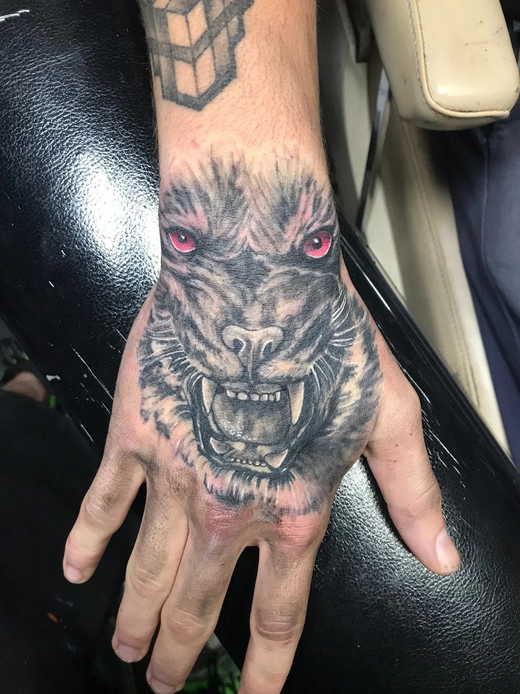
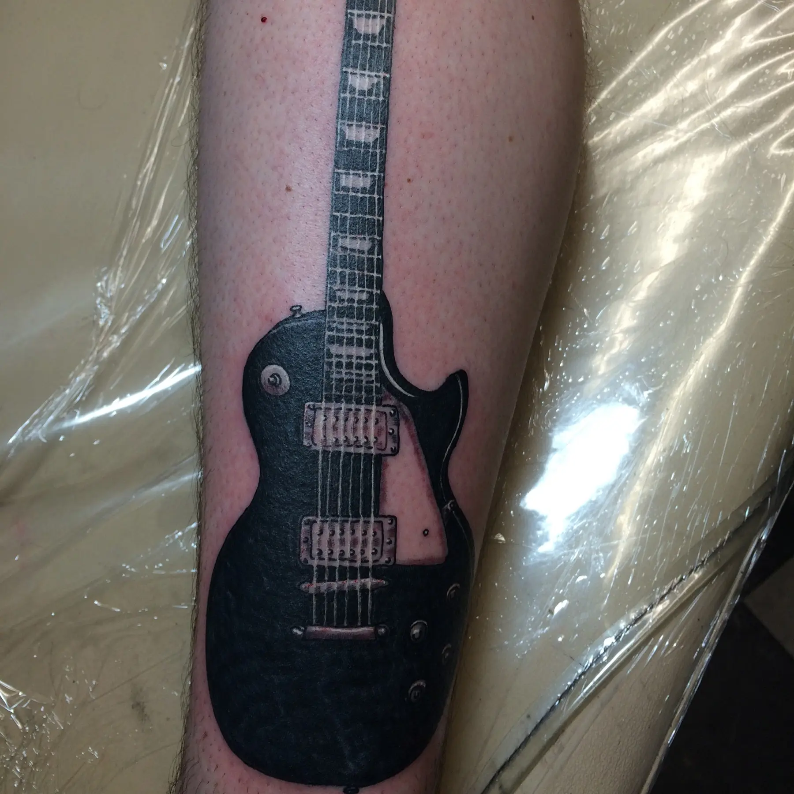

Value Structure
Dark, midtone, and open areas are planned so the focal point remains clear instead of turning into one flat gray mass.
Black-and-Gray Tattoos • Oklahoma City
Josh Poindexter plans black-and-gray work around readable value structure, placement, scale, and the amount of detail the tattoo can support over time.

Josh’s planning approach
Black-and-gray tattooing depends on the relationship between deep darks, middle values, open skin, and soft transitions. Josh begins with the subject and placement, then builds a composition that remains understandable at a normal viewing distance.
Reference images are useful for explaining mood, realism, texture, or subject matter. The final tattoo is redrawn for the client and body placement rather than copied from another artist’s work.
Design priorities
These decisions determine whether the idea works as a tattoo on the selected body area.
Dark, midtone, and open areas are planned so the focal point remains clear instead of turning into one flat gray mass.
The amount of texture has to match the available space. Larger placements can support more layering and environmental detail.
The outer silhouette and direction of the subject are shaped around the arm, back, hand, leg, or other chosen placement.
Negative space and controlled contrast help the tattoo stay visually organized as lines soften and the skin changes.
Placement and execution
A backpiece offers room for a primary subject, secondary elements, and atmosphere. A hand tattoo needs a faster read, fewer tiny transitions, and a silhouette that works from several angles. Arms and legs require the composition to wrap without hiding the focal point on the inside of the limb.
During consultation, Josh evaluates the location, approximate size, skin condition, nearby tattoos, and whether the piece must connect to existing work. Those choices determine how much detail and how many value changes can be used responsibly.

Portfolio connections
Project pages discuss only the facts visible or published. Private client stories, exact session counts, and healed status are not invented.
Large-scale value hierarchy and atmospheric depth.
View details →A compact focal point with a strong black-and-gray silhouette.
View details →
High contrast and simplified structure for immediate recognition.
View details →Prepare for consultation
Questions clients ask
Black ink is diluted and layered to create a range of values. Open skin also becomes part of the composition, providing light and separation.
Some detail is possible, but every subject has a minimum practical scale. Josh may recommend simplifying the image or increasing the size so the tattoo remains readable.
It can, but the transition should be planned. Bring clear photos of the nearby work so Josh can evaluate value, style, direction, and spacing.
Pricing depends on size, placement, detail, complexity, and estimated time. A consultation provides enough information for a realistic estimate.
Start the project
Share the subject, body location, approximate size, references, and any existing work in the area.